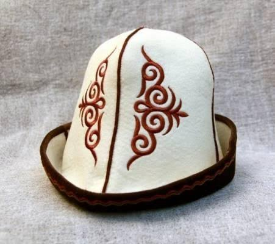
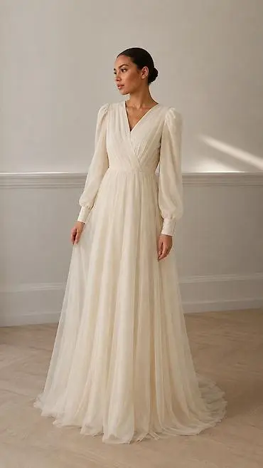
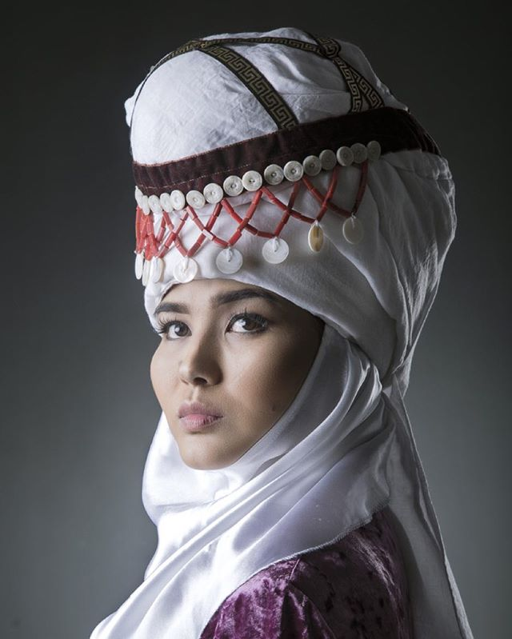

Калпак

кыргызский национальный головной убор
2500с
купить
кыргызский национальный головной убор
2500с
купить.jpg)
Традиционный кыргызский чапан с орнаментом в национальном стиле. Подходит для праздников, торжеств и особых мероприятий.
7500с
купить
Кыргызский камзол (на кыргызском языке также кемсел или кемзал) — это традиционный безрукавный или с короткими рукавами кафтан / жилет, который является важной частью национального костюма.
3500с
купить.jpg)
Традиционный кыргызский головной убор, подходящий для холодного времени года.
300с
купить
Женское традиционное платье с элементами кыргызского орнамента.
5500с
купить
Традиционный женский головной убор замужних кыргызских женщин.
6500с
купить